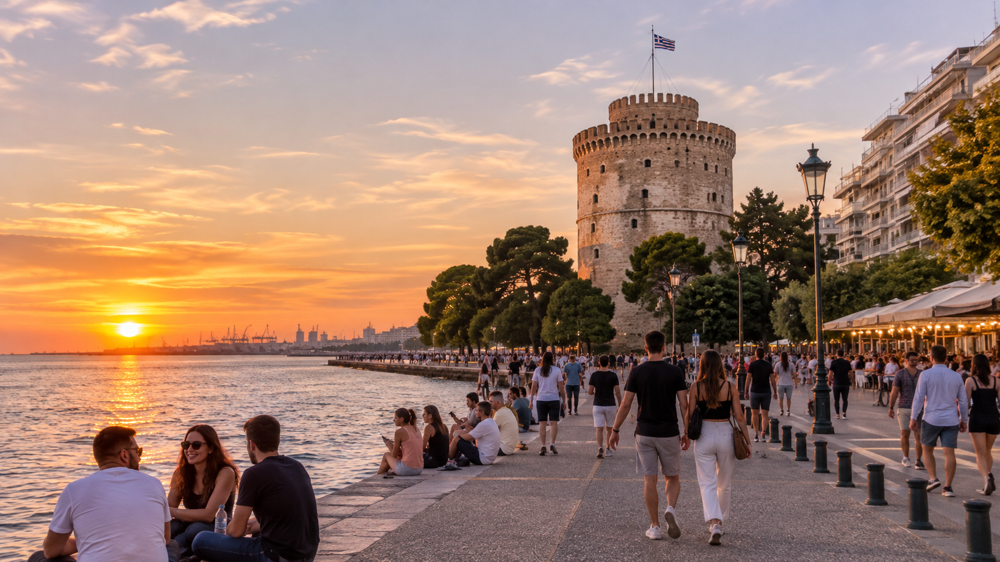
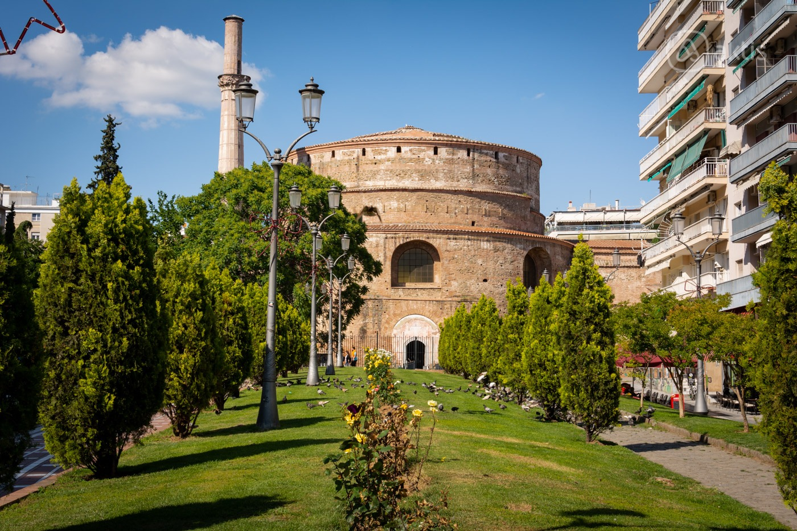

Culture
Thessaloniki is a vibrant city known for its diverse culture, lively atmosphere, and rich traditions. Its streets are filled with cafés, restaurants, music venues, and markets that reflect the everyday life of its residents.
The city is especially famous for its food, combining traditional Greek flavors with influences from its multicultural past. Festivals, art exhibitions, and a bustling nightlife make Thessaloniki a popular destination for visitors seeking an authentic Greek experience.
One of the most interesting aspects of Thessaloniki's culture is the way old traditions blend with modern lifestyles. Visitors can explore traditional neighborhoods such as Ano Poli, enjoy local music and cuisine, or discover contemporary art in the city's galleries.
The people of Thessaloniki are also known for their hospitality and love of social gatherings, making the city feel welcoming to both locals and tourists. Whether exploring its historic streets or enjoying a coffee by the waterfront, there is always something new to experience.
History
Founded in 315 BC by King Cassander of Macedon, Thessaloniki has played an important role throughout Greek and European history. Its strategic location made it a major center during the Roman and Byzantine periods, leaving behind landmarks such as the Arch of Galerius and the Rotunda.
The city later became part of the Ottoman Empire before joining the Greek state in 1912. Today, its historic monuments and archaeological sites reflect the many civilizations that have shaped its identity.
Throughout the centuries, Thessaloniki has experienced periods of great prosperity as well as significant challenges. Its location along important trade routes helped it develop into a major commercial and cultural center.
The city also became home to different religious and ethnic communities, each contributing to its architecture, traditions, and identity. Despite wars, fires, and major changes over time, Thessaloniki has preserved many important historical landmarks that allow visitors to discover its fascinating past.
